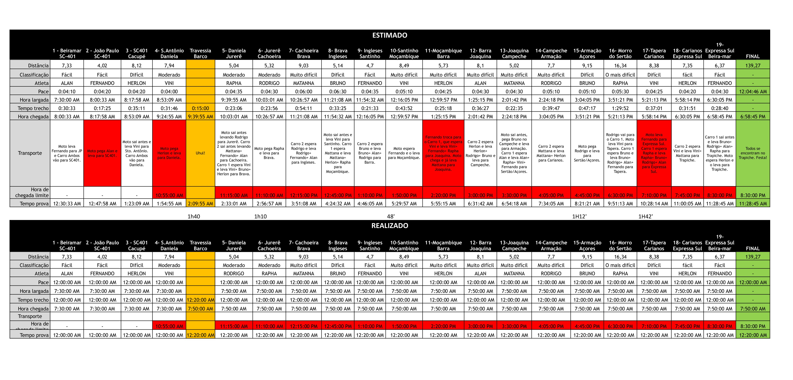

Estamos preparados para o desafio da Volta à Ilha 2025, uma das provas mais emblemáticas do revezamento em Florianópolis. Com uma equipe dedicada e treinada, buscamos superar nossos limites e alcançar excelentes resultados.
NOSSO OBJETIVO: TEMPO TOTAL ABAIXO DE 11h28min
A Volta à Ilha é um revezamento de longa distância que percorre 140km ao redor da ilha de Florianópolis, divididos em 19 trechos com diferentes níveis de dificuldade. Nossa equipe está inscrita na categoria Elite Masculina, competindo contra as melhores equipes do país.
Conheça os corredores da Viva Bem Elite e os trechos que cada um irá percorrer:
1 Beiramar/SC-401 (7,33km - Fácil)
12 Barra/Joaquina (8,1km - Muito Difícil)
2 João Paulo/SC-401 (4,02km - Fácil)
9 Ingleses/Santinho (4,7km - Fácil)
19 Expressa Sul/Beira-mar (6,37km - Fácil)
3 SC401/Cacupé (8,12km - Difícil)
11 Moçambique/Barra (5,73km - Muito Difícil)
18 Carianos/Expressa Sul (7,35km - Fácil)
4 S.Antônio/Daniela (7,94km - Moderado)
10 Santinho/Moçambique (8,49km - Muito Difícil)
17 Tapera/Carianos (8,38km - Difícil)
5 Daniela/Jurerê (5,04km - Moderado)
16 Morro do Sertão (16,34km - O mais difícil)
6 Jurerê/Cachoeira (5,32km - Moderado)
14 Campeche/Armação (7,7km - Muito Difícil)
7 Cachoeira/Brava (9,03km - Muito Difícil)
13 Joaquina/Campeche (5,02km - Muito Difícil)
8 Brava/Ingleses (5,14km - Difícil)
15 Armação/Açores (9,15km - Difícil)
Confira todos os trechos da Volta à Ilha 2025 com distâncias e níveis de dificuldade:
| Trecho | Posto de Troca | Distância (km) | Dificuldade | Atleta |
|---|---|---|---|---|
| 1 | Beiramar/SC-401 | 7,33 | Fácil | Alan |
| 2 | João Paulo/SC-401 | 4,02 | Fácil | Fernando |
| 3 | SC401/Cacupé | 8,12 | Difícil | Herlon |
| 4 | S.Antônio/Daniela | 7,94 | Moderado | Vini |
| 5 | Daniela/Jurerê | 5,04 | Moderado | Rapha |
| 6 | Jurerê/Cachoeira | 5,32 | Moderado | Rodrigo |
| 7 | Cachoeira/Brava | 9,03 | Muito Difícil | Paulinho |
| 8 | Brava/Ingleses | 5,14 | Difícil | Bruno |
| 9 | Ingleses/Santinho | 4,7 | Fácil | Fernando |
| 10 | Santinho/Moçambique | 8,49 | Muito Difícil | Vini |
| 11 | Moçambique/Barra | 5,73 | Muito Difícil | Herlon |
| 12 | Barra/Joaquina | 8,1 | Muito Difícil | Alan |
| 13 | Joaquina/Campeche | 5,02 | Muito Difícil | Paulinho |
| 14 | Campeche/Armação | 7,7 | Muito Difícil | Rodrigo |
| 15 | Armação/Açores | 9,15 | Difícil | Bruno |
| 16 | Morro do Sertão | 16,34 | O mais difícil | Rapha |
| 17 | Tapera/Carianos | 8,38 | Difícil | Vini |
| 18 | Carianos/Expressa Sul | 7,35 | Fácil | Herlon |
| 19 | Expressa Sul/Beira-mar | 6,37 | Fácil | Fernando |
Estimativas de pace da equipe
Principais regras da competição que nossa equipe deve seguir: